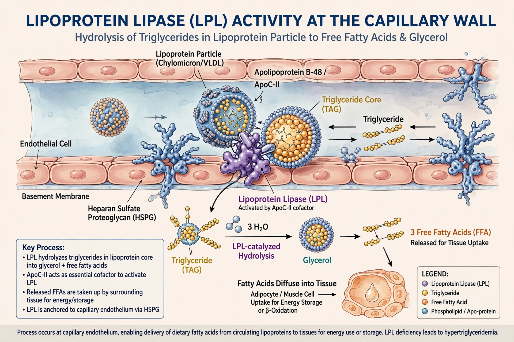

| Lipoprotein lipase | |
|---|---|
 | |
| Gene | LPL (chromosome 8) |
| EC number | 3.1.1.34 |
| Activator | Apolipoprotein C-II |
Lipoprotein lipase (LPL) is a water-soluble enzyme that hydrolyses triglycerides in lipoproteins — chylomicrons and VLDL — into free fatty acids and monoacylglycerol for uptake by tissues. It is anchored to capillary endothelium, notably in adipose tissue, skeletal and cardiac muscle, by the protein GPIHBP1.
LPL requires apolipoprotein C-II as cofactor and is inhibited by ApoC-III and angiopoietin-like proteins. Insulin upregulates adipose LPL after meals. Released fatty acids are stored, oxidised for energy, or used in milk production in the mammary gland.
Genetic LPL deficiency causes familial chylomicronemia syndrome, with severe hypertriglyceridemia, eruptive xanthomas, and recurrent pancreatitis. Partial defects and variants influence HDL levels and coronary artery disease risk.